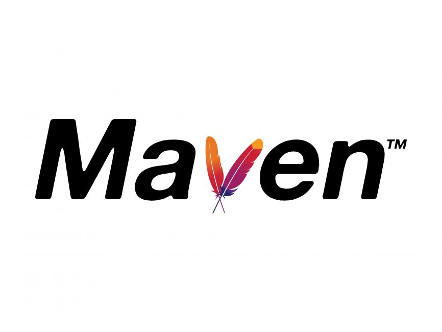
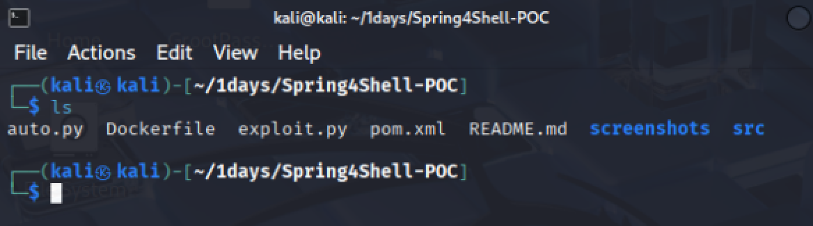
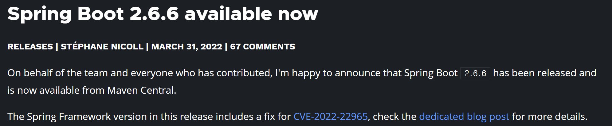
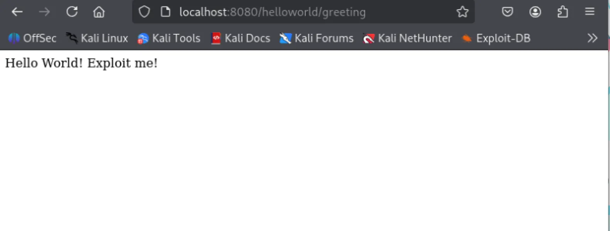
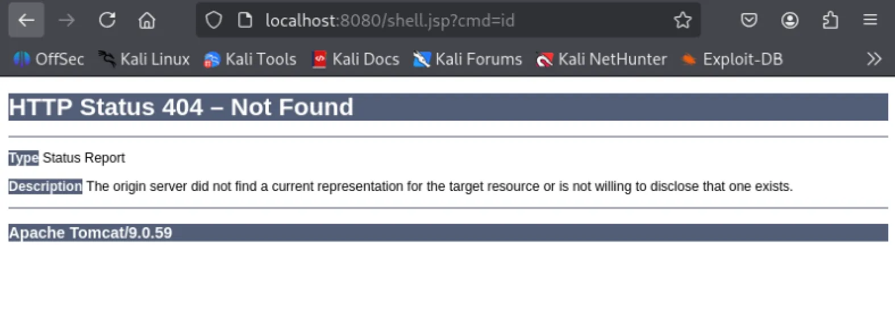
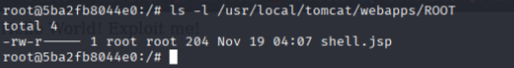
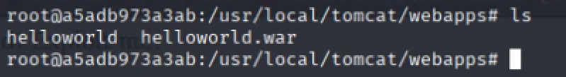
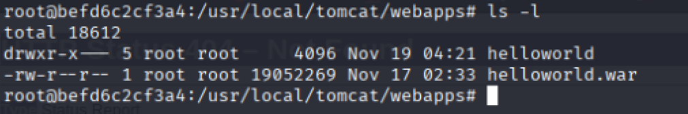
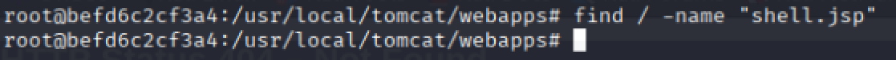

이번 주차에는 직접 보안 패치를 적용해보고
효과가 어떤지 알아보는 활동을 하였다.
패치 전 사전 지식
이번 패치에서 내가 사용한 PoC 코드에는 Spring Boot 와 Maven 이 사용되었다.
이 2개에 대해서 먼저 말한 다음에
패치를 어떻게 하였는지 설명하도록 하겠다.
Maven

Maven 이라는 Java 프로젝트의 빌드를 자동화 해주는 도구가 있다.
즉, 소스 코드를 컴파일하고 패키징해서 배포하는 일을 자동화 하는 것이다.
pom.xml
Maven 을 사용한다면, 최상위 디렉터리에 pom.xml 이 보일 것이다.
pom.xml 은 Maven 이 참조하는 설정 파일 중 하나이다.
pom 이라는 이름은 Project Object Model 에서 왔으며,
프로젝트 내 빌드 옵션을 설정하는 부분이다.
Spring Boot
Spring Boot 는 Spring Framework 로 애플리케이션을 만들 때
필요한 설정을 간편하게 처리해주는 별도의 Framework 이다.
초기 설정을 간편하게 처리해주는 것 외에
내장 서버를 사용하여, 빠르고 간편하게 배포를 할 수있다는 것과
독립적으로 실행 가능한 .jar 파일로 프로젝트를 빌드할 수 있어,
가상화 환경에서 빠르게 배포할 수 있다는 장점이 있다.
패치 및 효과 확인
사전 지식을 다 알았으니
이 지식을 바탕으로 패치를 진행하겠다.

내가 사용한 PoC 에서 pom.xml 이 있으니,
Spring Boot 가 사용된 것을 알 수 있다.
Spring Boot 의 버전을 확인해 보았다.
다음은 pom.xml 의 전체 코드이다.
<?xml version="1.0" encoding="UTF-8"?>
<project xmlns="http://maven.apache.org/POM/4.0.0" xmlns:xsi="http://www.w3.org/2001/XMLSchema-instance"
xsi:schemaLocation="http://maven.apache.org/POM/4.0.0 https://maven.apache.org/xsd/maven-4.0.0.xsd">
<modelVersion>4.0.0</modelVersion>
<parent>
<groupId>org.springframework.boot</groupId>
<artifactId>spring-boot-starter-parent</artifactId>
<version>2.6.3</version>
<relativePath/> <!-- lookup parent from repository -->
</parent>
<packaging>war</packaging>
<groupId>com.example</groupId>
<artifactId>spring4shell-vulnerable-application</artifactId>
<version>0.0.1-SNAPSHOT</version>
<name>Spring4Shell Vulnerable Application</name>
<description>Demo project for Spring Boot</description>
<properties>
<java.version>1.8</java.version>
</properties>
<dependencies>
<dependency>
<groupId>org.springframework.boot</groupId>
<artifactId>spring-boot-starter-thymeleaf</artifactId>
<version>2.6.3</version>
</dependency>
<dependency>
<groupId>org.springframework.boot</groupId>
<artifactId>spring-boot-starter-web</artifactId>
<version>2.6.3</version>
</dependency>
<dependency>
<groupId>org.springframework.boot</groupId>
<artifactId>spring-boot-starter-test</artifactId>
<version>2.6.3</version>
<scope>test</scope>
</dependency>
<dependency>
<groupId>org.springframework.boot</groupId>
<artifactId>spring-boot-starter-tomcat</artifactId>
<version>2.6.3</version>
<scope>provided</scope>
</dependency>
</dependencies>
<build>
<finalName>helloworld</finalName>
<plugins>
<plugin>
<groupId>org.springframework.boot</groupId>
<artifactId>spring-boot-maven-plugin</artifactId>
<version>2.6.3</version>
</plugin>
</plugins>
</build>
</project>
여기서 <version> 을 살펴보면
2.6.3 버전이라는 것을 알 수 있다.

Spring 에서 발표한 공식 문서의 일부분이다.
Spring Boot 2.6.6 에서 CVE-2022-22965
즉, Spring4Shell 을 수정했다고 알렸다.
따라서 Spring Boot 의 버전을
2.6.3 에서 2.6.6 으로 바꾸면 된다.
그 후 다음 명령어를 사용하여 재구축을 진행하였다.
docker build -t spring4shell-patched .
docker run -d -p 8080:8080 --name spring4shell-test spring4shell-patched

이제 패치 후 웹 페이지를 연 다음
익스플로잇 코드로 웹 쉘이 생성되는지 확인하면 된다.

코드를 실행하면 웹 쉘이 생성되었다고 하지만
접속해보면 404 가 나온다.
이게 패치로 인해서 막힌 건지 아니면 다른 이유인지
더 자세히 살펴보았다.
그러기 위해서는 다음 명령어를 쳐서 컨테이너의 이름을 알아야 한다.
docker ps
CONTAINER ID IMAGE COMMAND CREATED STATUS PORTS NAMES
befd6c2cf3a4 spring4shell-patched "catalina.sh run" About a minute ago Up About a minute 0.0.0.0:8080->8080/tcp, :::8080->8080/tcp spring4shell-test
이름은 spring4shell-test 이다.
이제 이 컨테이너의 다음 명령어로 접속하면 된다.
docker exec -it spring4shell-test /bin/bash
접속하였다면 웹 쉘이 생성되었는지 보면 된다.
그 전에 패치하기 전에는 웹 쉘이 어디에 생성되는지부터 살펴보겠다.
/usr/local/tomcat/webapps/ROOT 에 shell.jsp 가 있는 것을 볼 수 있다.

여기서 ROOT 라는 디렉터리는 웹 쉘과 함께 생성되는 디렉터리이다.
웹 쉘이 생성되기 전에는 ROOT 디렉터리가 존재하지 않는다.

이제 돌아가서 패치 후를 살펴보면 ROOT 디렉터리가 존재하지 않는다.

혹시 몰라서 find 명령어로 루트 디렉터리부터 검색을 시작하게 했지만
shell.jsp 는 존재하지 않았다.

따라서 패치를 통해 취약점을 수정한 것을 확인할 수 있었다.
후기
저번에 웹 쉘에 ls -l 을 사용하여 pom.xml 이 있다는 것은 알았는데
이번에 이 파일이 무슨 역할을 하는 건지 알 수 있어 좋았다.
그리고 이번에 패치를 처음 해보았는데
실제로 shell.jsp 가 없는 것을 보니 아주 뿌듯하다.